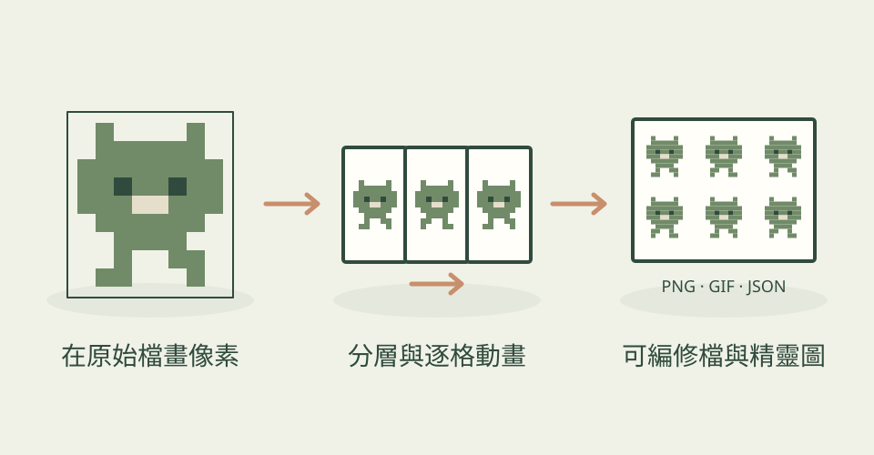

做遊戲素材時，一張不能修改的圖片往往不夠。Aseprite AI Artist 讓 agent 在 Aseprite 文件裡安排像素、分開圖層與規劃動作，你可以接手修改，也可以用復原撤回步驟。
它怎麼幫忙
studio 負責從需求、概念、繪製到動畫與輸出；也可單獨使用配色、陰影、動畫或修圖技能。它把畫面寫成逐格文字網格，讀回畫布再調整，並以預覽和獨立評圖回合檢查結果。作者另外公開了史萊姆攻擊的 18 格動畫、製作記錄與原始檔。
功能快速理解

在 Aseprite 中安排像素、圖層與動作，保留原始檔並輸出遊戲素材。
功能示意・本站繪製 放大查看可以這樣開口
這是一個可依需求修改的委託範例。
製作一位 32×32、PICO-8 配色的森林騎士，加上四格待機動畫。身體與武器分圖層，保留 .aseprite 原始檔，另輸出 Godot 用 spritesheet 與 GIF 預覽。
適合什麼工作
適合獨立遊戲美術、角色逐格動畫，以及希望能持續修改素材的人。
開始之前
- 準備工具
- Aseprite 1.3+、Node 22.6+、專案的 Aseprite 擴充套件與 MCP server，以及可使用它的 agent。
- 使用成本
- 專案採 MIT；Aseprite 與 agent 模型費用另計。概念參考圖可跳過，若另用生圖服務則依服務計費。
- 交付內容
- 可編修 .aseprite、sprite sheet／atlas、GIF、PNG
- 先留意
- 今天首次收錄的小眾工具。作者表示評圖流程的品質改善仍未正式測量；展示動畫不代表每次都能達到相同效果。
作者與來源
本文依作者公開說明整理，沒有實際執行這個專案。功能插圖由本站繪製，原作者範例另行標示；並非本站執行技能的測試結果。GitHub 星數為專案總量，觀察時間為 2026年10月21日 08:35（台北時間）。
首次收錄，尚無前次收藏量比較。